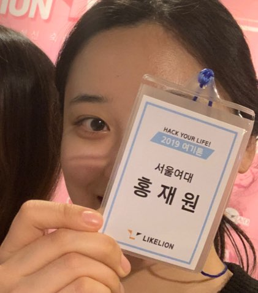

My Post
About Me
서울여자대학교 교육심리학과 16학번 홍재원, 코딩에 도전하다!

안녕하세요. 저는 서울 송파구에 거주하고 있는 멋쟁이 사자처럼 7기, 23살 홍재원입니다.
코딩과는 평소 거리가 먼 비전공자였으나, 제 미래의 직업으로 교육용 앱을 만드는 사람이 되어야겠는 생각을 하게 되었습니다.
혼자서 공부를 해보려고도 하였으나, 조금만 어려워지면 주위에 물어볼 사람도 없어서 쉽게 포기를 하는 제 모습을 볼 수 있었습니다.
그러다 멋쟁이 사자처럼이라는 동아리를 알게되었고, 운좋게 동아리에 가입하게 되어 좋은 기회를 얻게 되었습니다.
제 연락처는 010-2256-0903이고, 멋쟁이 사자처럼에서 좋은 친구들 많이 사귀고 싶어요~